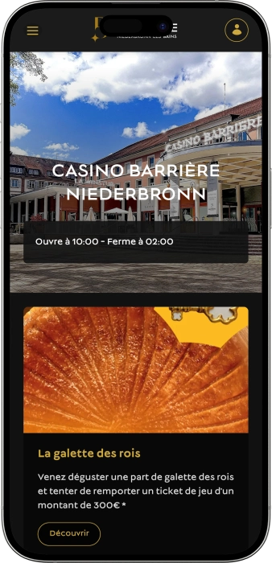

Offre de bienvenue exclusive de
Offre de bienvenue exclusive de
Casino Barrière Niederbronn‑les‑Bains — jeux, restaurant, bar et soirées
Top casinos
Détails du bonus
Casino
Bonus
Note
Tours gratuits
Plus d'infos
Obtenir
Avantages
-
Plus de 125 machines, classiques, nouveautés, jackpots
-
Roulette française: format rare, frissons garantis
-
Roulette anglaise et postes électroniques pratiques
-
Blackjack et Ultimate Texas Hold’em Poker
-
Ambiance thermale, détente sans agitation
-
Restaurant façon winstub, saveurs alsaciennes
-
Concerts, soirées à thème, animations régulières
- Le Casino Barrière Niederbronn‑les‑Bains séduit par l’équilibre entre jeux et art de vivre : on y alterne facilement tables, machines et pause au bar. L’accueil et l’agencement favorisent une expérience fluide, autant pour les débutants que pour les habitués. Les animations et la restauration ajoutent une vraie dimension « sortie » au-delà du jeu.
Casino Barrière Niederbronn


À propos Casino Barrière Niederbronn‑les‑Bains
Le casino se distingue par un mix efficace entre tables traditionnelles et jeux électroniques, idéal pour monter en rythme sans pression. Il se démarque aussi par des animations récurrentes et des opérations événementielles qui donnent plus de valeur à chaque soirée.
- Jackpots : jusqu’à 100 000 €+.
- Tournois : gains 1 000–10 000 €.
- Tickets jeu : jusqu’à 300 €.
Le Casino Barrière Niederbronn‑les‑Bains réunit jeu et détente dans un même lieu. On peut commencer la soirée aux machines et rejoindre ensuite les tables avec croupiers. Le décor vise une élégance chaleureuse plutôt qu’un luxe ostentatoire.
Le rythme est flexible : on joue intensément ou tranquillement avec des pauses confortables. Les amateurs de variété apprécient la présence de formats classiques et électroniques. Le bar et le restaurant transforment la visite en véritable sortie. L’ambiance convient aussi bien aux couples qu’aux groupes d’amis. Les animations régulières apportent une touche d’événementiel à chaque passage. L’équipe privilégie un accompagnement discret et professionnel. Au final, c’est une adresse choisie pour mêler jeux, musique et plaisir de table.
Casino Barrière Niederbronn‑les‑Bains : esprit thermal et soirée de jeu
Le Casino Barrière Niederbronn‑les‑Bains s’apprécie comme une adresse “soirée complète”, où l’on ne vient pas uniquement miser, mais aussi se détendre. Le style privilégie généralement une modernité lumineuse, pensée pour le confort et une circulation fluide. Les espaces évitent l’effet oppressant : on se repère facilement et l’on passe d’une zone à l’autre sans rupture. Cette organisation aide les débutants à se sentir à l’aise, tout en offrant aux habitués une expérience efficace. L’ensemble dégage un esprit plus “thermal” et posé, tout en gardant l’énergie du casino.
Les horaires sont habituellement adaptés aux sorties de fin de journée et aux sessions nocturnes : ouverture en journée, fermeture tardive, avec des amplitudes souvent plus larges lors des périodes fortes. Cela permet de venir après une promenade ou un dîner, puis de prolonger la soirée. Il faut garder à l’esprit que les horaires peuvent évoluer lors des fêtes ou des événements, d’où l’intérêt de prévoir une marge. Ce modèle convient autant à une visite courte qu’à une nuit complète de jeu. Le rythme intérieur accompagne bien cette flexibilité, sans donner l’impression d’être pressé.
Le bar joue souvent un rôle de “sas” lounge : cocktails, boissons classiques, assises confortables et ambiance propice à la discussion. C’est l’endroit idéal pour respirer entre deux sessions, attendre un ami ou changer de tempo. Côté restauration, l’objectif est de proposer une cuisine ancrée localement, accessible et suffisamment soignée pour transformer la visite en vraie sortie. On n’a pas l’impression de simplement grignoter, mais de s’offrir un moment de table. Cette dimension “art de vivre” renforce l’identité du lieu.
L’hébergement n’est pas nécessairement intégré au casino : l’idée est plutôt d’accueillir les visiteurs pour la soirée, avec des solutions de logement disponibles à proximité. On peut ainsi organiser un week‑end sans complexité, en combinant jeu, détente et découverte. Ce positionnement correspond bien au caractère thermale de la destination. Le casino devient alors une pièce d’un programme plus large, et non une activité isolée. Pour beaucoup, c’est précisément ce qui rend l’expérience attractive.
Les animations constituent un autre point fort : concerts, soirées thématiques, propositions musicales et opérations spéciales apportent une dynamique régulière. Même en venant “juste jouer”, on ressent une ambiance vivante et événementielle. En groupe, cela crée un équilibre : certains jouent, d’autres profitent du bar, et tout le monde reste dans l’énergie de la soirée. Cette variété évite la lassitude et rend les visites plus mémorables. L’expérience se construit sur un ensemble : musique, lumière, service et programmation.
Enfin, les mécanismes d’avantages et de fidélité au sein de l’univers Barrière reposent souvent sur le statut et la fréquence de visite. Le principe est simple : plus vous êtes actif, plus les privilèges deviennent personnalisés. Cela peut se traduire par des invitations, des offres de jeu, des attentions au bar ou des services prioritaires. Utilisée intelligemment, cette approche rend les visites régulières plus avantageuses que les passages ponctuels. C’est une raison fréquente de revenir au Casino Barrière Niederbronn‑les‑Bains.
Service, langues, paiements : comment se passent les transactions et les gains
Le personnel du Casino Barrière Niederbronn‑les‑Bains adopte généralement une approche calme et professionnelle : pas de pression, mais une aide claire sur les règles et les démarches. À l’accueil et en salle, les équipes orientent le visiteur vers les espaces de jeu, la restauration et les services utiles. Au bar et au restaurant, l’objectif est de garder une pause agréable et rapide, afin de ne pas casser le rythme de la soirée. Aux tables, les croupiers maintiennent un tempo lisible et peuvent expliquer les bases aux débutants. Globalement, le service correspond à une clientèle de sortie et de détente : courtois, efficace, discret.
Côté langues, le français domine, avec souvent la possibilité d’échanger en anglais, et assez fréquemment en allemand, ce qui aide les visiteurs internationaux. Lorsqu’il s’agit de règles de mise, de limites ou de formalités d’entrée, l’équipe privilégie une explication simple et structurée. Pour des questions plus techniques (documents, procédures, gros gains), il est préférable de passer par le comptoir de service, où l’on obtient une réponse plus complète. Les touristes apprécient surtout le “pas‑à‑pas”, qui réduit l’appréhension. Cette pédagogie fait partie du confort d’expérience.
La monnaie de référence est l’euro, utilisé pour les mises comme pour la facturation en restauration. Les paiements s’effectuent le plus souvent par carte bancaire et en espèces selon les zones et les usages autorisés. Des limites de transaction et des contrôles d’identité peuvent s’appliquer, notamment pour des montants importants : c’est une pratique standard dans ce type d’établissement. La combinaison carte/espèces est pratique : carte pour le repas, espèces pour gérer son budget de jeu. Pour éviter tout blocage, mieux vaut disposer d’un document valide et d’un moyen de paiement à votre nom.
Les distributeurs automatiques et services de retrait se trouvent généralement sur place ou tout près, afin de limiter les déplacements. Le change n’est pas toujours un service central du casino : dans la plupart des cas, les visiteurs viennent déjà en euros ou utilisent les outils bancaires. Si une conversion est nécessaire, il est souvent plus avantageux de la préparer via sa banque ou de retirer dans un distributeur avec conditions claires. Les frais et plafonds dépendent autant du distributeur que de la banque émettrice. Anticiper ces paramètres rend la soirée plus fluide.
Le retrait d’un gain varie selon le jeu et le montant. Pour les gains modestes sur machines ou jeux électroniques, le paiement se fait généralement rapidement au guichet, avec une vérification d’identité standard. Aux tables, l’échange des jetons contre des espèces se fait à la caisse, parfois avec contrôle documentaire. Pour un gain important, des vérifications supplémentaires et un mode de paiement sécurisé (parfois virement) peuvent être requis, afin de respecter les règles de sûreté et de conformité financière. Le personnel explique alors les étapes et les délais attendus.
La fiscalité des gains dépend de deux choses : les pratiques de l’établissement et surtout les règles liées à votre résidence fiscale. Dans de nombreux scénarios, le casino procède au paiement selon ses procédures internes sans “taxe immédiate au guichet”, mais une obligation déclarative peut exister pour le joueur selon son pays. En cas de somme significative, il est conseillé de conserver les justificatifs et, si besoin, de consulter un spécialiste. Cette prudence évite les malentendus et sécurise votre situation. Le rôle principal du casino reste l’identification correcte et la traçabilité de l’opération.
Règles de visite du Casino Barrière Niederbronn‑les‑Bains : tenue, accès et trajet
La visite commence par un principe simple : l’accès est réservé aux majeurs avec un document valide. Un contrôle d’identité peut être effectué à l’entrée, il est donc préférable d’avoir sa pièce sur soi même pour une courte halte. La tenue demandée correspond en général à une présentation soignée, sans look “plage” ni excès de sportwear. En salle, des règles de savoir‑vivre s’appliquent : respect du personnel et des autres joueurs, interdiction des comportements agressifs ou trop bruyants. La photo et la vidéo sont souvent limitées, surtout près des tables, afin de protéger la confidentialité. Un état d’ivresse manifeste peut conduire à un refus d’entrée ou à une sortie demandée, pour des raisons de sécurité. Des zones fumeurs peuvent exister ou le tabac peut être strictement encadré selon l’organisation interne. Il faut respecter les règles propres à chaque jeu ainsi que les limites affichées. En groupe, se fixer un budget et un timing rend la soirée plus confortable. Pour les automobilistes, la proximité des solutions de stationnement est un vrai plus, et pour les visiteurs, la zone thermale sert de repère facile.
- • Tenue (dress code) : tenue correcte exigée ; éviter tongs, shorts de plage, débardeurs ; le soir, un style smart casual est idéal.
- • Accès : 18+ ; pièce d’identité obligatoire ; contrôle de sécurité possible ; l’établissement peut refuser l’entrée en cas de non‑respect.
- • Interdictions : perturber le jeu, souffler des conseils aux tables, filmer/photographier sans autorisation, comportements conflictuels, dégradation.
- • Comportement aux tables : mises selon les consignes du croupier ; arbitrage par le responsable de salle en cas de litige ; manipulation des cartes/jetons encadrée.
- • Stationnement : places disponibles à proximité de la zone thermale ; prévoir un peu de marge en heures de pointe.
- • Accès/itinéraire : repère principal autour de la Place des Thermes ; accès à pied depuis les hébergements proches ; en voiture, guidage vers Place des Thermes.
Le Carré VIP : niveaux, avantages et bonus au Casino Barrière Niederbronn‑les‑Bains
Le programme de fidélité au format Barrière fonctionne généralement comme un club qui valorise la régularité. Vous vous inscrivez, obtenez une carte nominative, puis vous cumulez des avantages au fil des visites. L’intérêt majeur est la personnalisation : les offres s’adaptent souvent à vos habitudes (machines, tables, événements). Le programme ne se limite pas à des crédits de jeu : il apporte aussi du confort, des attentions et une meilleure expérience globale. Pour beaucoup, les bénéfices “service” pèsent autant que les bonus, car ils améliorent chaque soirée.
La mécanique repose souvent sur des points : plus vous êtes actif, plus vous gagnez, et plus votre statut progresse. Les niveaux supérieurs offrent généralement un meilleur taux de cumul et des avantages plus exclusifs. Cette logique encourage une relation durable avec le casino plutôt qu’une visite ponctuelle. Des moments‑clés comme l’anniversaire ou les périodes saisonnières sont souvent l’occasion d’offres supplémentaires. Au final, le club crée une expérience plus “privée”, où le visiteur se sent reconnu.
L’inscription se fait en général rapidement au comptoir, avec une pièce d’identité et quelques informations de contact. Une fois la carte active, vous profitez immédiatement des premiers avantages, puis les privilèges s’élargissent selon votre statut. Les conditions exactes peuvent évoluer, donc il est utile de vérifier les détails sur place. Même au niveau d’entrée, un joueur régulier constate souvent des bénéfices concrets.
Conditions d’inscription :
- • Pièce d’identité 18+ — vérification lors de l’adhésion.
- • Formulaire 2–3 minutes — coordonnées et consentements.
- • Carte remise immédiatement — activation sur place.
- • Cumul lié aux visites — les avantages démarrent après le jeu.
Niveaux
- • Start / Base — dès l’inscription ; cumul 1×.
- • Silver — régularité, par exemple dès 500 points ; cumul 1,25×.
- • Gold — activité soutenue, par exemple dès 2 000 points ; cumul 1,5×.
- • Platinum / Prestige — forte activité, par exemple dès 5 000 points ; cumul 2× et offres personnalisées.
Bonus & avantages
- • Bonus de bienvenue : crédit jeu 10–30 €.
- • Anniversaire : avantage 20–50 € ou crédit restaurant jusqu’à 40 €.
- • Logique “cashback” : équivalent 0,5–2% en points.
- • Invitations : soirées privées 1–4 fois/mois (selon statut).
- • Événements : réduction 10–20% sur certaines animations/dîners.
- • Confort : priorité/réservation, welcome‑drink 1–2 boissons.
- • Offres ciblées : coupons jeu 5–25 € sur jours calmes.
Fournisseurs de logiciels
Divertissement et jeux au Casino Barrière Niederbronn‑les‑Bains
Bonus, jackpots et offres spéciales au Casino Barrière Niederbronn‑les‑Bains
En dehors du club, le casino anime souvent la salle avec des opérations accessibles à tous. La catégorie la plus visible reste le jackpot progressif sur machines, dont le montant peut monter et créer une vraie tension positive. Viennent ensuite les événements de jeu : tournois, soirées thématiques, challenges sur machines. Enfin, il y a les formats “sortie complète”, mêlant restauration et animation : dîners‑spectacles, concerts, soirées musicales.
Les temps forts saisonniers jouent aussi un rôle : périodes festives, semaines thématiques, opérations ponctuelles avec tirages au sort. Ces offres créent des moments “idéaux” pour venir, car elles ajoutent une récompense potentielle au simple plaisir du jeu. Les conditions sont généralement simples : participer à un événement, jouer sur une sélection de machines ou s’inscrire à une animation.
- • Jackpots progressifs machines : gains potentiels souvent 50 000–150 000 €+, liés à certains jeux et évolutifs jusqu’au déclenchement.
- • Ticket de jeu : récompense promotionnelle, par exemple jusqu’à 300 € en crédit/ ticket selon l’opération.
- • Challenges machines : mini‑compétitions avec cagnotte, par exemple 500–3 000 € sur une soirée ou une semaine.
- • Événements poker (Ultimate Texas Hold’em) : tournois/animations avec gains, par exemple 1 000–10 000 € selon format.
- • Bingo & animations : sessions ludiques avec lots, par exemple 50–500 € et cadeaux.
- • Happy hours : créneaux avec coupons 5–20 € ou tirage “seconde chance”.
- • Offres saisonnières : campagnes avec crédits 10–100 €, cadeaux, invitations.
- • Packs “dîner + jeu” : une partie convertie en crédit jeu, par exemple 10–30 €.
- • Concerts/soirées : parfois accompagnés de tirages, par exemple 100–1 000 € en tickets/avantages.
Jeux phares du Casino Barrière Niederbronn‑les‑Bains : machines, roulette et tables
La carte de jeux du Casino Barrière Niederbronn‑les‑Bains est pensée pour plusieurs profils : décisions rapides aux machines, stratégie aux tables, et versions électroniques pour jouer à son rythme. Les machines à sous restent la zone la plus fréquentée, entre classiques à rouleaux et vidéoslots modernes avec bonus. Les amateurs de “vrai casino” se tournent vers la roulette : la roulette anglaise apporte un tempo familier, tandis que la roulette française ajoute une touche plus rare et plus élégante. Le blackjack attire ceux qui veulent influencer davantage le résultat grâce à la stratégie.
Les formats de type Ultimate Texas Hold’em mélangent l’énergie du casino et des décisions proches du poker. Les jeux électroniques, eux, réduisent la pression : interface claire, rythme personnel, apprentissage plus simple. Pour un débutant, c’est souvent la meilleure porte d’entrée avant de passer aux tables. Pour un habitué, c’est un moyen efficace de jouer une session courte sans attente.
L’intérêt majeur est la possibilité d’alterner : machines, roulette, table, retour aux machines, puis pause au bar. Cette alternance aide à gérer le budget et les émotions. Les jeux deviennent alors une expérience globale plutôt qu’une liste de disciplines.
- • Machines à sous : classiques et vidéoslots, bonus, jackpots progressifs.
- • Roulette anglaise : mises dynamiques, ambiance table traditionnelle.
- • Roulette française : format plus rare, expérience casino marquante.
- • Roulette électronique : postes, rythme confortable, idéal débutants.
- • Blackjack (table) : jeu stratégique, décisions du joueur importantes.
- • Blackjack électronique : parties rapides, interface simple, peu d’attente.
- • Ultimate Texas Hold’em : format poker‑like, tactique de mise, duel contre la banque.
Mises au Casino Barrière Niederbronn‑les‑Bains : minimums et maximums
Connaître les fourchettes de mises permet de gérer son budget et de choisir le bon style de jeu : les machines conviennent aux sessions courtes, la roulette au jeu posé, et le blackjack aux amateurs de stratégie. Les limites varient selon l’heure, le jour, l’affluence et le type de table ou de terminal. Le tableau ci‑dessous propose des fourchettes indicatives courantes dans ce type de casino. Avant de jouer, vérifiez les limites affichées près des tables ou auprès du personnel.
| Jeu / Format | Mise minimum | Mise maximum |
|---|---|---|
| Machines à sous | 0,01–0,10 € | 1–2 € par spin |
| Roulette électronique | 0,20–1 € | 50–200 € |
| Roulette anglaise (table) | 2–5 € | 500–2 000 € |
| Roulette française (table) | 2–5 € | 500–2 000 € |
| Blackjack (table) | 5–10 € | 1 000–3 000 € |
| Ultimate Texas Hold’em | 5–10 € | 500–2 000 € |
| Vidéo‑poker / jeux électroniques | 0,10–0,50 € | 50–200 € |
Animations au Casino Barrière Niederbronn‑les‑Bains : musique, soirées et shows
Le Casino Barrière Niederbronn‑les‑Bains se vit autant comme un lieu de jeu que comme une scène de sortie. Le format “après‑dîner” y fonctionne très bien : on joue, puis on prolonge avec une ambiance musicale ou une soirée thématique. Les événements donnent une énergie particulière : même en venant pour les machines ou la roulette, on ressent une dynamique autour de soi. En groupe, c’est idéal : certains jouent, d’autres profitent du bar, et tout le monde se retrouve lors de l’animation.
Les rendez‑vous réguliers tournent souvent autour de la musique : concerts, live, soirées à thème et DJ sets en espace lounge. On peut voir cela comme un “club doux” intégré au casino : pas un club strict, mais une vraie ambiance nocturne avec lumière et cocktails. L’avantage est évident : pas besoin de changer d’adresse, la soirée se déroule naturellement au même endroit. Le volume et le style s’adaptent généralement à une clientèle mixte, entre danse et écoute.
Les temps forts spéciaux suivent le calendrier : périodes festives, week‑ends thématiques, soirées saisonnières. Ces dates renforcent la dimension “expérience complète”, où jeu, restauration, tirages et ambiance se combinent. Des formats “dîner‑show” peuvent aussi apparaître, mêlant repas et spectacle. C’est particulièrement apprécié par les couples et les groupes qui veulent un plan clé en main.
Pour maximiser l’expérience, le meilleur réflexe est de viser une date où l’animation et la motivation de jeu (jackpots/offres) se rejoignent. La visite devient alors un vrai événement.
- • Concerts & live : ambiance lounge, styles variés.
- • Soirées DJ : rythme festif, cocktails, tard dans la nuit.
- • Soirées thématiques : calendrier et saisons, décor et ambiance dédiés.
- • Dîner‑show : formule “restaurant + spectacle” conviviale.
- • Bingo & animations : sessions ludiques avec lots et animateur.
- • Événements promo en salle : tirages, challenges, “happy hours”.
Bars, restaurant et détente au Casino Barrière Niederbronn‑les‑Bains : vivre une soirée confortable
La détente au Casino Barrière Niederbronn‑les‑Bains suit une logique simple : faire de la visite une sortie complète. On vient pour jouer, mais on profite aussi d’un cadre, de boissons, d’un repas et d’une ambiance. Le point central côté table est le restaurant La Winstub, généralement associé à des saveurs locales et une cuisine conviviale. Cela facilite l’organisation : pas besoin de choisir entre dîner et casino, les deux se complètent. Beaucoup de visiteurs commencent par le repas pour installer l’ambiance, puis passent aux jeux.
Le bar lounge est l’autre pilier du confort. Il sert de pause : cocktail, discussion, respiration, recalage du budget. Dans un casino, disposer d’un espace où l’on peut ralentir est essentiel pour garder une soirée agréable. Le format lounge favorise l’alternance : on ne joue pas en continu, on équilibre avec des moments de détente. C’est souvent ce qui fait la différence entre une simple visite et une vraie soirée réussie.
Concernant l’hébergement, le modèle privilégie la sortie du soir plutôt qu’un hôtel intégré obligatoire. En revanche, il est généralement facile de trouver des solutions à proximité pour bâtir un week‑end : détente en journée, casino le soir. Ce schéma séduit ceux qui veulent une escapade complète plutôt qu’un passage rapide. Le casino devient alors une pièce d’un séjour plus large.
Pour optimiser l’expérience, on peut penser la soirée comme une séquence : dîner, jeu, pause au bar, animation musicale, puis dernière session. L’impression finale est plus cohérente et plus agréable.
- • La Winstub (restaurant) : cuisine locale, vrai dîner, idéal avant/après le jeu.
- • Bar Lounge : cocktails et boissons, pauses et échanges entre sessions.
- • Espaces de respiration : zones pour ralentir et changer de rythme.
- • Hébergements proches : hôtels/appartements pour un week‑end “casino”.
FAQ
Oui, mais des contrôles et une identification renforcée peuvent s’appliquer pour des montants importants. Beaucoup de visiteurs préfèrent combiner carte et espèces.
En général, des aménagements de base sont prévus (accès, circulations, sanitaires). Pour des besoins spécifiques, il est conseillé de se renseigner.
Pas de limite fixe tant que vous respectez le règlement et les horaires. Des restrictions peuvent exister lors de privatisations.
Le casino met généralement à disposition des informations et des dispositifs : limites personnelles, accompagnement, auto‑exclusion. Cela aide à garder une pratique maîtrisée.